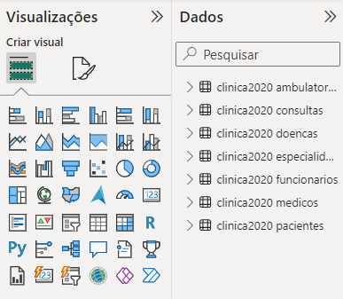

Através do estudo do livro "Aprendendo Banco de Dados com MySQL" , foi feito o aprendizado teórico e prático em cima do database "clinica2020". E conhecimento adequerido no curso online "Fundamentos de Análise de dados com Excel e Power Bi", foi criado um Dashboard que mostra os dados disponiveis no database de forma simples e objetiva sobre os acontecimentos na clinica, como as doenças aparecidas, data da frequencia dos pacientes e capacidade de Ambulatório. Além disso, é mostrado salario total junto de todos os funcionários, as especialidades dos médicos e o sexo dos pacientes que solicitaram atendimento médicos.
Conexão com MySQL

Após a Conexão com o MySQL, as tabelas ficam disponíveis na lateral direita do programa, próximo da coluna "visualizações", onde pode ser construído gráficos e tabelas para uma melhor visualização dos dados, com os dados separados ou unindo as tabelas para ter dados melhores.